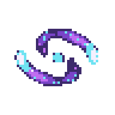
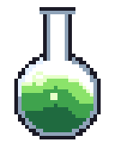

Pixel art magic effects: a spell swirl and a bubbling potion in your browser
Both effects here are Pixelbolt recipes: short JSON files that run a small fluid simulation and bake it into palette pixels, the same pixels every time.
Open one in the Pixelbolt playground, recolour it for fire, frost or poison, and download a sprite sheet, an atlas for your engine or a GIF. It is free and runs in your browser, with nothing to install.
Pixelbolt 0.9.1 · 25 October 2026 · On this page: Magic swirl · Bubbling potion
Reading the field names below: an effect's settings sit under effects → its name. An emitter (a source of heat, smoke, liquid or particles) is one entry in its emitters list, found by its "name" where it has one. Frames count from 0 (the playground's frame counter starts at 1), and x and y are pixels from the top-left corner.
Magic swirl

Two glowing lights orbit a bright core and leave purple mana that spirals: a portal, a charging spell or a summoning circle.
48 × 48 pixels, 24 frames of 60 ms, looping. Shown at 4×.
Open the magic swirl in the playground
Make it yours
These sit under effects → magic-swirl, except palette, which is at the top of the recipe.
orbitoncomet-1,glint-1,halo-1andtail-1, and the same four ending in-2(radius[16, 13],period24): the ellipse the two lights follow. A negativeperiodturns them anticlockwise; in a loop it must divide the number of frames (24).vortexandexpandon theswirlemitter (0.7 and -1.15): how fast the mana swirls and how hard it is pulled inwards.palette(v,p,m,candW): mana from dark violet to magenta, lights in cyan and white. Change them to make it fire, frost or poison.countin thetail-1andtail-2emitters'sparks(0.7): sparkles shed per frame.
Bubbling potion

A green potion bubbles in a round flask: the surface heaves and bubbles rise and pop.
32 × 40 pixels, 24 frames of 70 ms, looping. Shown at 4×.
Open the potion in the playground
Make it yours
These sit under effects → potion, except palette, which is at the top of the recipe.
sparkson thebubblesemitter (count0.3,size2,poptrue): bubbles per frame, how many pixels across each one is, and the pop where it leaves the liquid.pulseon theheatemitter (amplitude1,period12): pushes the liquid up from below twice a loop.noiseon theboilemitter (0.2): small random pushes that keep the surface moving.palette(G,g,landw): the potion's colours from deep to bright. Change them for a red health potion or a blue mana potion.
Make your sprite sheet in four steps
- Open an effect above with its Open … in the playground button. The link carries the whole recipe and names Pixelbolt 0.9.1, and the playground renders it in your browser. There is nothing to install and no account.
- Change a value in the Recipe JSON box. The preview renders again after each edit. If the JSON breaks, it says what is wrong, usually with the line number.
- Choose a scale for the frame PNG and the GIF, from 1× to 16×. The sheet and atlas stay at the art's own size (see below).
- Download the files you need (listed below). Copy link makes a link to your edited version.
Export for your game engine
- Sheet PNG: every frame on one transparent sprite sheet.
- Atlas PNG + JSON: the same sheet plus a TexturePacker-style JSON hash with each frame's rectangle, its duration in milliseconds and the named animations. Phaser loads it with
load.atlas. In Godot, Unity or another engine, slice the sheet as a grid of equal cells; the game integration notes explain how. - GIF: the animation for a devlog, a store page or a chat, at the scale you chose. Before you download it, the playground shows its size in pixels and its number of frames.
- Frame PNG: the frame on screen, at the scale you chose.
- Recipe JSON: the recipe itself, to keep, edit or share.
Sheets come at the art's own size, one pixel per pixel. For a bigger sheet, set "scale" in the recipe's top-level "sheet" (add "sheet": { "scale": 4 } if it has none; whole numbers from 1 to 16), or scale it in your engine with nearest-neighbour filtering. Every PNG the playground exports carries its recipe, so you can open it in the playground later (Open file, or drop it on the page) and carry on editing.
The same from the command line
With Node.js 20 or newer, save the recipe (the playground's Recipe JSON button saves it as magic-swirl.fluid.json, or open it from the 0.9.1 package and save it), then run:
npx -y pixelbolt@0.9.1 compile magic-swirl.fluid.json --out magic-swirl.json
npx -y pixelbolt@0.9.1 gif magic-swirl.json --scale 4 --out magic-swirl.gif
npx -y pixelbolt@0.9.1 render magic-swirl.json --out magic-swirlRun them in the folder where you saved the recipe; Pixelbolt won't overwrite existing files unless you add --force. compile runs the simulation and writes the result as an ordinary recipe of frames. gif writes the animation as a GIF. render writes a folder with the sprite sheet, its atlas JSON, every frame as a PNG, an animated PNG, CSS classes, a small Canvas player, a preview page and the recipe. The same commands work for potion.fluid.json.
For AI agents: Pixelbolt also runs as a local MCP server, whose pixel_compile tool compiles these recipes. See Connect an agent through MCP in the README.
Licence
Pixelbolt is free and open source under the MIT licence. The example recipes on this page ship in its MIT-licensed npm package, and its README says the included artwork is original and covered by the same licence.
Want them ready-made?
Elemental FX is a pack of 27 animated pixel-art effects made with Pixelbolt: elemental powers, impacts, fire, smoke, goo, lava and magic, as transparent sprite sheets with JSON atlases and Godot 4 SpriteFrames files. $4.99 or more on Gumroad.
More pixel art effect guides
- Fire: a campfire, a torch and a hand-drawn flame
- Explosions: a fireball with smoke and sparks, and small particle bursts
- Smoke and steam: a cartoon smoke puff, a steam vent and a dust wave
- Water: a waterfall, a splash, a drip and a dam break
- Slime and honey: a squashing slime, a bursting slime, pouring honey and a honey drop
All guides · The playground · Pixelbolt home
Comparing effect tools? See Pixel FX Designer alternatives: 7 pixel-art effect tools compared. For agents: pixel art MCP servers compared.